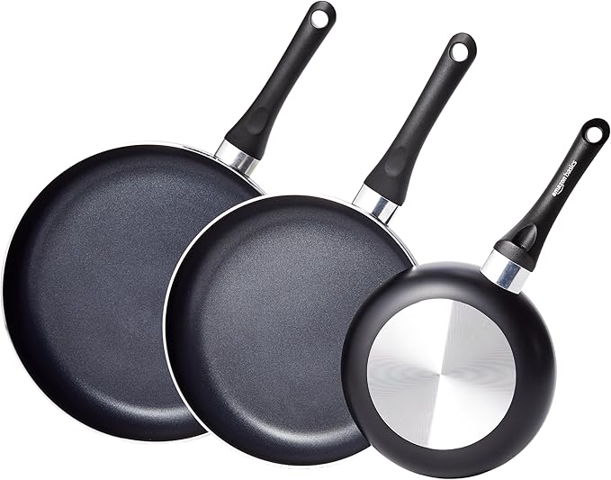
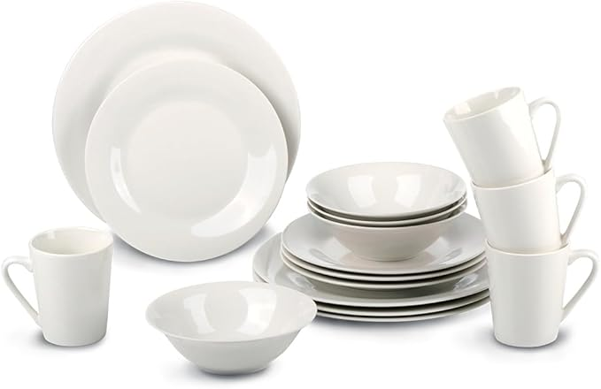

Set di 3 padelle con rivestimento antiaderente composto da una padella da 20 cm, una da 25 cm e una da 30 cm. Corpo in alluminio con rivestimento antiaderente per una facile cottura e pulizia Confortevoli manici soft-touch che non si surriscaldano durante l'uso. Coperchi in vetro temprato con sfiato che lasciano fuoriuscire il vapore. Il fondo a spirale si riscalda uniformemente. La batteria è compatibile con piani cottura a gas, elettrici e in vetroceramica (nota: non è compatibile con quelli a induzione; non posizionare il manico direttamente sopra la fonte di calore). È preferibile il lavaggio a mano.

Set cena per 4 persone - Il set di stoviglie Alpina contiene 4 piatti piani, 4 piatti dessert, 4 ciotole e 4 tazze, perfetto per un gruppo di 4 persone in totale. Naturalmente puoi sempre espandere il set per adattarlo a un gruppo più numeroso. set piatti in terra, Il set di stoviglie è realizzato in terracotta. Questo materiale ha un aspetto raffinato ed è meno sensibile ai graffi e ai danni dovuti ad uno strato di smalto. stoviglie resistenti a microonde e lavastoviglie, Il set di piatti offre la massima comodità per l'utente: puoi utilizzare ciotole, piatti e tazze sia in lavastoviglie che nel microonde. elegante set piatti, Oltre alla raffinata finitura della terracotta, questo set di stoviglie presenta anche un elegante colore panna. Ciò rende il set di piatti perfetto per quasi ogni tavola.